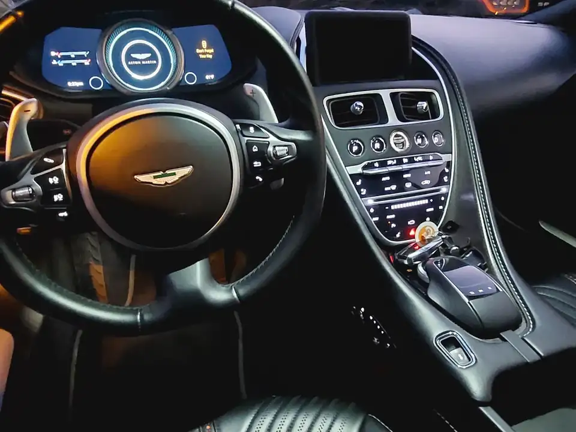

Mobile detailing · Orlando
Interior Car Detailing in Orlando
Thoughtful interior cleaning tailored to your vehicle’s materials, use, and condition.

A cleaner cabin
Care for the surfaces you use every day.
Interior detailing focuses on seats, carpets, floor mats, dashboards, door panels, cupholders, glass, and frequently touched surfaces. Our interior car detailing Orlando service is tailored to the vehicle’s materials and condition. The process should match the material: leather, coated upholstery, screens, piano-black trim, and delicate finishes need appropriate products and care.
Tell us what needs attention
- Everyday dust, dirt, and buildup
- Carpet and upholstery stains
- Pet hair and tracked-in debris
- Leather and interior trim cleaning
- Odors or areas needing extra attention
Some stains, odors, and material damage cannot be fully removed. Share photos and details so we can set realistic expectations before scheduling.
Give your cabin a proper reset.
Tell us your vehicle and the areas you want addressed.